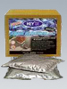

Универсальная гидроизоляция на основе MS полимера
Гидроизоляционные материалы на основе MS полимеров это материалы на основе полиуретана с силанольной группой, названного MS - полимером. Они сочетают в себе лучшие качества силиконов и полиуретанов, и во многом их превосходят. Например, они обладают большей чем у полиуретана, адгезией практически к любым, даже влажным основаниям. Они не образуют воздушных пузырей при нанесении, а после отверждения превращаются в резиноподобную массу, сохраняют эластичность и свойства в широком диапазоне температур.
Чистые экологически они не содержат растворителей, силикона и изоцианатов, не имеют запаха, обладают очень малой усадкой, и хорошей устойчивостью к УФ-излучению, атмосферному и химическому воздействию, водостойки, легко ремонтируются, их можно окрашивать и т.д. Например, материал Акваблокер соответствует всем требованиям DIN 18195 к толстослойным битумным покрытиям на основе модифицированного битума, но при этом существенно превосходит часть этих требований. Сфера применения MS полимеров практически не ограничена.
Акваблокер

Однокомпонентный, готовый к использованию, тиксотропный гидроизоляционный материал на основе MS-полимера.
Гидроизоляционный материал Акваблокер применяется для гидроизоляции от влажности грунта и воды под давлением наружных стен подвалов, сооружений без подвалов, фундаментов, плит основания, стыков, проходов труб и других строительных конструкций. Для ремонта крыш, примыканий дымовых труб, световых куполов, примыканий и стыков на плоской кровле, сточных желобов и т.д. Для гидроизоляции покрытия, непосредственно к которому приклеивается керамическая плитка. Для герметизации швов между бетонными блоками при внешней гидроизоляции подвалов и гидроизоляции горизонтальных поверхностей и др.
Гидроизоляционный материал Акваблокер сочетает преимущества силикона и полиуретана. Отверждается от влаги воздуха в прочный высокоэластичный резиноподобный материал. Не содержит изоцианатов, растворителей, воды и битума. Обладает хорошим сцеплением с различными основаниями, например, с бетоном, каменной кладкой, металлом, деревом, битумными рулонными материалами, стиропором и многими другими пластмассами.
Гидроизоляционный материал Акваблокер перекрывает раскрытие трещин до 10 мм и устойчив к воздействию атмосферы и естественным грунтовым водам, разрушительным для бетона. Наносится валиком, кистью без грунтовки. Основание может быть слегка влажным.
Расход материала Акваблокер
От 1,15 кг/м2 до 1,5 кг/м2 для одного слоя.
Примерно 2,3 кг/м2 при толщине слоя 1,5 мм.
Форма поставки материала Акваблокер
Картуши по 290 мл.
Банки 1 кг.
Пластиковые ведра по 14 кг, в ведре два пакета по 7 кг
Акваблокер Ликвид

Однокомпонентный, готовый к использованию, низковязкий, саморастекающийся гидроизоляционный материал на основе MS-полимера для горизонтальных поверхностей.
Гидроизоляционный материал Акваблокер ликвид (подробнее) применяется для долгосрочной защиты фундаментов и плит пола от влажности грунта и воды под давлением. Для гидроизоляции плоских крыш, с укладкой армирующей ткани в места особенно опасные с точки зрения раскрытия трещин. Для создания слоя торможения водяного пара под стяжкой на балконах и террасах и для гидроизоляции, непосредственно к которой приклеивается керамическая облицовка. Для заливки в подвижные и деформационные швы в промышленных применениях.
Акваблокер ликвид сочетает преимущества силикона и полиуретана. Отверждается от влаги воздуха в прочный высокоэластичный резиноподобный материал. Гидроизоляционный материал Акваблокер ликвид не содержит изоцианатов, растворителей, воды и битума. Обладает хорошим сцеплением с различными основаниями, например, - с бетоном, каменной кладкой, металлом, деревом, битумными рулонными материалами, стиропором и многими другими пластмассами. Гидроизоляционный материал перекрывает раскрытие трещин до 10 мм и устойчив к воздействию атмосферы и естественным бетонагрессивным грунтовым водам.
Гидроизоляционный материал Акваблокер ликвид легко наносится в два слоя (без грунтовки) при помощи валика с коротким ворсом или ракли. Основание может быть слегка влажным. Деформационные и подвижные швы заливаются прямо из упаковки.
Расход материала Акваблокер ликвид
От 1,15 кг/м2 до 1,5 кг/м2 для одного слоя.
Примерно 2,3 кг/м2 при толщине слоя 1,5 мм.
Форма поставки материала Акваблокер ликвид
Пластиковые ведра по 14 кг, в ведре два пакета по 7 кг.
Гидроизоляция: Для долгосрочной защиты фундаментов и плит пола от влажности грунта и воды под давлением.
Гидроизоляция плоских крыш: Для гидроизоляции плоских крыш с укладкой армирующей ткани в места особенно опасные с точки зрения раскрытия трещин.
Гидроизоляция на балконах и террасах: Для слоя торможения водяного пара под стяжкой на балконах и террасах и для гидроизоляции, непосредственно к которой приклеивается керамическая облицовка.
Промышленные полы: Для слоя торможения водяного пара под стяжкой в промышленных цехах и для гидроизоляции, непосредственно к которой приклеивается керамическая облицовка, или на которую наносится эпоксидное или полиуретановое покрытие.
Деформационные и подвижные швы: Для заливки в подвижные и деформационные швов в промышленных применениях. Швы заливаются непосредственно из упаковки.